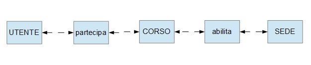

Ho realizzato il sito di un azienda inventata da me, l'E.R.C.F. (Ente Regionale Corsi Formativi) ispirandomi ad altre aziende simili gia esistenti.
Quest'azienda si occupa di organizzare e gestire varie tipologie di corsi formativi rivolti a chiunque sia interessato per la propria
formazione professionale e si estende nei più svariati ambiti lavorativi come Cucina, Settore Edile, Artigianato etc.
Questi corsi sono per lo piu finanziati dalla regione ma possono essere presenti anche dei corsi autofinanziati cioe a carico dell'interessato
oppure finanziati da altre aziende e si svolgono all'interno di una delle varie sedi che l'azienda ha nel territorio.
Il sito è strutturato come un layout fisso composto da un intestazione in alto, una sidebar affiancata ad un contenuto e un fondo.
All'interno dell'intestazione è presente il logo dell'azienda in evidenza e un piccolo menu verticale dalla quale si puo accedere alle varie
informazioni sull'azienda e alla sezione per accedere all'area riservata. Nella sidebar a sinistra invece è contenuto il menu principale
dalla quale l'utente può selezionare la sede a lui più comoda e verificare i corsi in programma in essa in ordine di recenza. Un'altra icona del
menu consente di vedere i corsi terminati. Se si seleziona un corso inoltre si accede ad una pagina nella quale si possono trovare tutte le informazioni
specifiche del corso appena selezionato. Tutte le varie informazioni sono mostrate all'interno della sezione contenuto. Inoltre ho incluso
nell'intestazione anche una piccola barra di ricerca che consente all'utente di cercare una frase chiave tra le informazioni di ciascun corso
e di visualizzare successivamente i corsi corrispondenti a questa.
Da qui è possibile accedere al sito
Si tratta infatti di un sito dinamico che si appoggia ad un database strutturato come in figura:

Ulteriori dettagli sulle tabelle sono mostrati nei file con estensione sql all'interno della cartella db all'interno del reposity
All'interno del sito è possibile logarsi con due differenti tipologie di utente. Una volta effettuato il riconoscimento all'interno del menu nella
sidebar comparira un ulteriore campo identificato dal nome utente, all'interno della quale sarà possibile scegliere una tra le opzioni
a cui ciascun ruolo può accedere. Per quanto riguarda i ruoli questi sono distinti dal campo priorità, e sono:
L'Amministratore che ha il compito di caricare nuovi corsi ed eliminare quelli vecchi. Per quanto riguarda l'inserimento,
vengono richieste le varie informazioni sul corso obbligatorie e facoltative e successivamente con una conferma tramite bottone queste vengono
caricate all'interno del db. Parlando invece dell'eliminazione, una volta effetuato l'accesso come amministratore nell'elenco dei corsi viene
mostrato per ciascuno il proprio codice di identificazione. Tramite questo parametro l'utente può dunque specificare dando conferma quale corso
intende eliminare. (User: Admin Password: Admin)
L'Utente che è colui che partecipa ai corsi. Questo ruolo puo registrarsi oppure cancellarsi da un corso nella pagina
che descrive ciascuno e inoltre può vedere l'elenco dei corsi alla quale è iscritto tramite l'opzione nel menu della sidebar
(User: User Password: User)
Sono presenti più transizioni, una tra tutte è quella all'interno della pagina "inscorso.php" nella quale viene caricato all'interno del database il corso appena creato dall'utente amministratore.
E' possibile vedere la funzionalità ajax all'interno della pagina "dove siamo.php". Qua, facendo click sul nome di una delle sedi, sulla destra saranno visualizzate le informazioni riguardanti questa. Ogni qualvolta verrà effettuata questa operazione la pagina mostrare di volta in volta i vari dati consultando il database e senza far si che la pagina si aggorni.